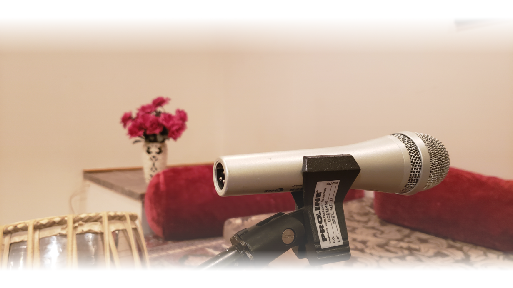
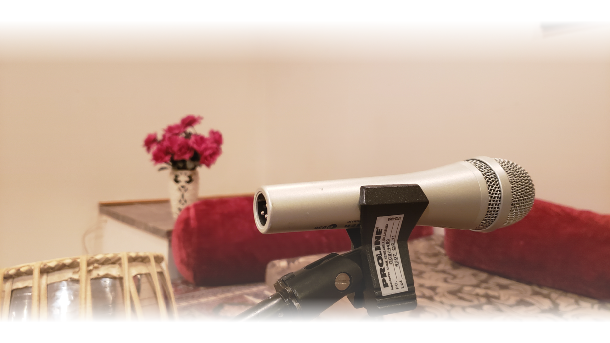

The Institute, Gamak Academy
Established in 1992 and originally known as Center For North Indian Classical Music, Troy, is a proud institute that encourages and helps the students of North Indian classical music to achieve their goals, whether they want to just take advantage of this ancient art for pure enjoyment and stress relief or whether they dream of stage performance. Student retention rate is a testament to the success of the institute. There are many students who are taking lessons under the thorough guidance of Mrinalini Arkatkar for years.
The institute provides training for North Indian Classical vocal and harmonium/keyboard playing, for solo or ensemble, and from a basic to advanced level. The institute follows a very strict and elaborate syllabus. On completion of 25 raagas, the student may appear for a diploma test conducted by the institute. The test consists of a written theory examination and a practical examination, of which the student should be able to demonstrate the knowledge of those 25 raagas and the Indian rhythms. A diploma certificate attested by institute is awarded on successful completion of the examination. The advanced-level students can earn a special plaque, “Kalavandan”, for their debut performance of Indian Classical Music. Students who wish to earn this, are required to present a classical concert for over one hour, open to the public. Not only are they required to present different forms of classical music, like “Tarana”, “Thumari”, etc., but it is also an absolute requirement that the student presents at least one “khayal”, with “Vilambeet” rhythm, “layakari’, etc. We encourage you to attend our “Kalavandan” programs, which are open to the public, so as to encourage the students in their entry to stage performances. Clips from some of the “Kalavandan” programs will be available soon on our website.